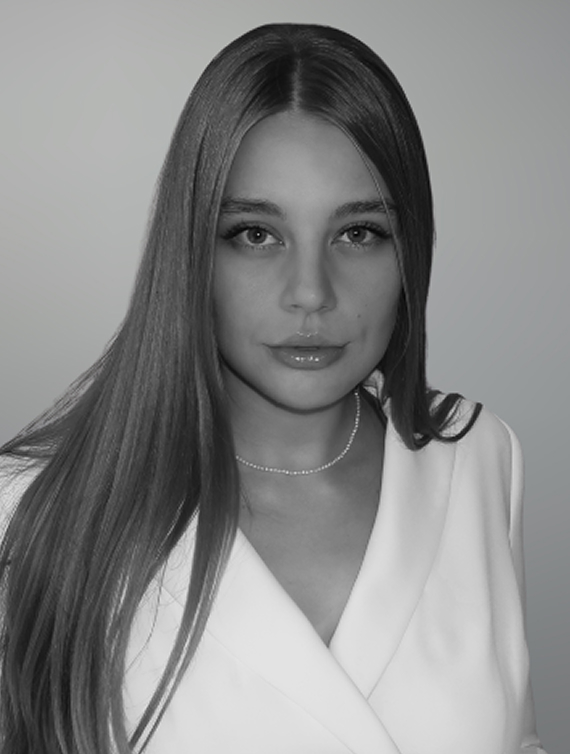

Software developer building multi-stage interactive real-time systems.
Front-end and back-end developer, integrating machine learning, computer vision and hardware, with a focus on user-centred experience.
I am currently pursuing an MSc in Creative Computing in London. Alongside my software development work, my background in Graphic Design Communication gives me a strong understanding of user behaviour, interaction and visual communication.
I work across software, physical computing and prototyping, combining code and hardware.

· Python
· JavaScript
· C/C++
· C#
· HTML
· CSS
· Full-stack development
· Real-time processing
· Automated pipelines
· Physical Computing
· Hardware Integration
· Prototyping
· Visual Studio Code
· Unity
· Arduino
· Git / GitHub
· Figma
· Adobe Creative Suite